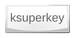

KSuperkey
Dieser Artikel wurde für die folgenden Ubuntu-Versionen getestet:
Ubuntu 16.04 Xenial Xerus
Ubuntu 14.04 Trusty Tahr
Zum Verständnis dieses Artikels sind folgende Seiten hilfreich:

Standardmäßig kann das KDE-Anwendungsmenü über die Tastenkombination
Alt +
F1 geöffnet werden. Viele Benutzer wünschen sich jedoch eine einzelne Taste, um auf das Menü zuzugreifen. Hier bietet KSuperkey  Abhilfe, denn sobald das Programm aktiv ist, öffnet sich das Anwendungsmenü über die Taste
Super (für Windows-Umsteiger:
Windows ). Hierbei sei angemerkt, dass andere Tastenkombinationen, die ebenfalls
Super verwenden, von KSuperkey nicht beeinflusst werden und damit weiterhin funktionieren.
Abhilfe, denn sobald das Programm aktiv ist, öffnet sich das Anwendungsmenü über die Taste
Super (für Windows-Umsteiger:
Windows ). Hierbei sei angemerkt, dass andere Tastenkombinationen, die ebenfalls
Super verwenden, von KSuperkey nicht beeinflusst werden und damit weiterhin funktionieren.
Installation¶
Hinweis:
Ab Kubuntu 16.04 ist die im folgenden beschriebene Installation nicht notwendig, da die Funktion bereits als Standard enthalten ist.
KSuperkey ist nicht in den offiziellen Paketquellen vorhanden, kann aber über das folgende PPA [1] bezogen werden:
Adresszeile zum Hinzufügen des PPAs:
ppa:mehanik/ksuperkey
Hinweis!
Zusätzliche Fremdquellen können das System gefährden.
Ein PPA unterstützt nicht zwangsläufig alle Ubuntu-Versionen. Weitere Informationen sind der  PPA-Beschreibung des Eigentümers/Teams mehanik zu entnehmen.
PPA-Beschreibung des Eigentümers/Teams mehanik zu entnehmen.
Damit Pakete aus dem PPA genutzt werden können, müssen die Paketquellen neu eingelesen werden.
Nach dem Aktualisieren der Paketquellen kann das Programm über das folgende Paket installiert [2] werden:
ksuperkey (PPA)
 mit apturl
mit apturl
Paketliste zum Kopieren:
sudo apt-get install ksuperkey
sudo aptitude install ksuperkey
Zum Abschluss muss man sich ab- und wieder anmelden, damit das Programm aktiv ist.
Benutzung¶
Das Programm ist nach der grafischen Anmeldung automatisch aktiv und durch Druck auf Super bzw. Windows öffnet sich das Anwendungsmenü.
Einstellungen¶
Wer die Voreinstellung nicht mag, kann ksuperkey eine andere Taste bzw. eine andere Funktion zuweisen. Die generelle Syntax sieht so aus:
ksuperkey -e 'SONDERTASTE=ERSTE_TASTE[|ZWEITE_TASTE][;WEITERE_TASTENKOMBINATIONEN]'
Beispiele:
KRunner ( Alt + F2 ) mit der Super-Taste öffnen:
ksuperkey -e 'Super_L=Alt_L|F2'
Mehrere Tasten zuweisen:
ksuperkey -e 'Control_L=Alt_L|F1;Super_L=Alt_L|F2;Shift_L=Control_L|S'
Dieser Befehl belegt die linke Strg -Taste mit Alt+F1, die linke Super-Taste mit Alt+F2 (KRunner) und die linke ⇧ -Taste mit der Kombination Strg + S (Dokument speichern).
- Erstellt mit Inyoka
-
 2004 – 2017 ubuntuusers.de • Einige Rechte vorbehalten
2004 – 2017 ubuntuusers.de • Einige Rechte vorbehalten
Lizenz • Kontakt • Datenschutz • Impressum • Serverstatus -
Serverhousing gespendet von